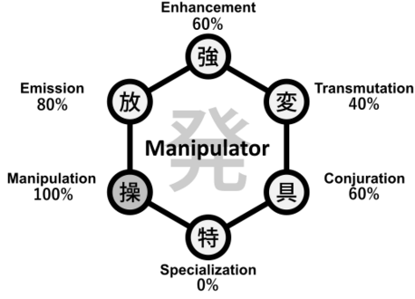

Hunter X Hunter
Manipulator Nen Type
Manipulators specialize in controlling objects or living beings, often requiring conditions like physical contact or signals to maintain influence.

Key Characteristics of Manipulators
- Controls targets with rules like signals, contact, or tokens.
- Excellent for battlefield control and utility.
- Strength tied to the strictness of conditions.
Video Overview
Enhancers rely on mental discipline to maintain and enhance their physical abilities, making them formidable opponents in direct confrontations.
Understanding Enhancer abilities is essential to grasp the fundamentals of Nen combat in Hunter x Hunter.